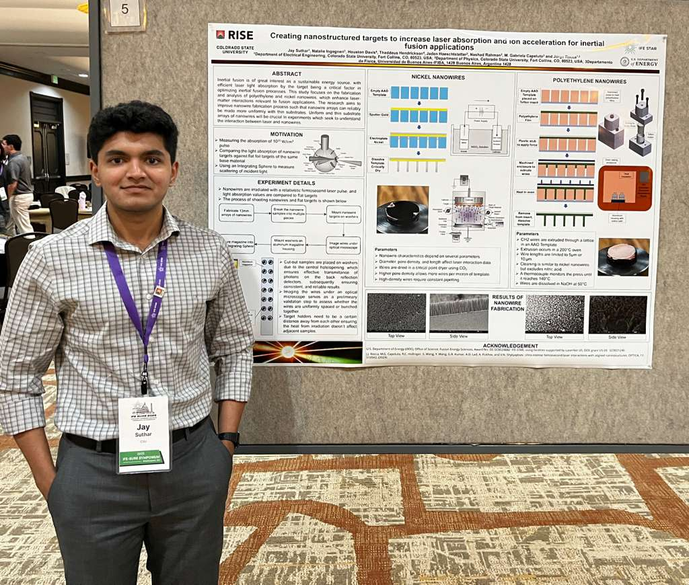

Produce nickel and polyethylene nanowire arrays from AAO templates while controlling wire geometry and uniformity.
About
Mechanical Engineering
Colorado State University
Class: 2027
From the computer to the shop.
I'm studying mechanical engineering at Colorado State University with an aerospace concentration. I like the part of engineering where a calculation has to become something you can build, test, and trust.
My work spans mechanical design in SolidWorks, analysis in ANSYS, simulation in MATLAB and Simulink, and embedded controls on the ESP32. On the variable geometry drone, I worked through the connections between sensor feedback, motor commands, and the mechanical system.
I like working through the full cycle: design a part, make it, see what happens, and revise it. I learn as much from problems on the test stand as I do from the initial model.
Design, integration, and hands-on testing.
Mechanical Design & Controls
My projects tend to cross between mechanical design, electronics, and controls. On the drone, I handled the wireless command link, attitude sensing, and motor control, then tested the response on a two-axis stand.
Technical Leadership
Working on a team has taught me to make requirements and interfaces explicit. A project moves faster when everyone knows what their subsystem must do and which decisions are still open.
Prototyping & Testing
I've spent a lot of time machining, 3D printing, and working with composite materials. I try to choose processes for the loads, tolerances, and schedule rather than starting with a favorite machine or material.
Nanostructured Targets for Inertial Fusion
Rocca Lab / IFE-STAR
Colorado State University · Department of Electrical Engineering
Research Intern · 2024–2025

Use SEM and optical microscopy to evaluate length, density, uniformity, and bunching before laser experiments.
Design and machine holders, a sample magazine, and a polymer nanowire press for preparation and optical testing.
Prepare samples for integrating-sphere measurements intended to compare scattering and absorption against flat targets.
In Dr. Jorge Rocca's lab at CSU, I helped fabricate and characterize nickel and polyethylene nanowire targets for inertial fusion research. We wanted to understand whether their geometry could improve laser coupling compared with flat targets made from the same material.
I came into a laser-physics lab as a mechanical engineering student. Much of my contribution was making the experiment physically possible: designing and machining the holders, magazine, and press used to prepare and position the targets, then checking the samples under microscopes.
Nanofabrication & characterization
For nickel targets, I worked with anodic aluminum oxide (AAO) templates that were gold sputtered, electroplated with nickel, chemically dissolved, and critically dried to expose the nanowire arrays. For polyethylene targets, we used heat and mechanical pressure to extrude polyethylene through the pores of an AAO template, then dissolved the template. The process operated at approximately 200°C, with wire lengths limited to 5 or 10 µm.
I used scanning electron microscopy and optical microscopy to evaluate nanowire length, density, uniformity, and bunching. Pore diameter, pore density, and wire length mattered because they determined the geometry presented to the incident laser.
Experimental design & mechanical engineering
I designed and fabricated machined fixtures, target holders, an aluminum sample magazine, and a polyethylene nanowire press to support fabrication and optical testing. The mounting system positioned nanowire targets over openings in washers so transmitted photons could reach the rear-reflection detectors. Target spacing helped prevent irradiation from heating neighboring samples.
I also worked with an integrating-sphere diagnostic setup intended to quantify scattering and absorption from the nanostructured targets. The workflow began with fabricating 13 mm nanowire arrays, then dividing and mounting samples, inspecting them under a microscope, loading them into an aluminum magazine, and installing the assembly in the integrating-sphere housing. The planned experiment compares laser absorption of nanowire targets with flat foils of the same base material.
Research focus
Inertial fusion energy · Laser-matter interactions · Nanofabrication · Experimental design · SEM characterization · Optical diagnostics · Precision machining
Research poster
Creating nanostructured targets to increase laser absorption and ion acceleration for inertial fusion applications
CSU Hydraulics Lab
Research Assistant
Colorado State University
I help with physical-model research in CSU's Hydraulics Lab, including setting up experiments, fabricating components, working with instrumentation, and collecting data.
I want my project write-ups to show what I actually built, why I made the decisions I did, and what the tests showed. If something didn't work, that's part of the result too.